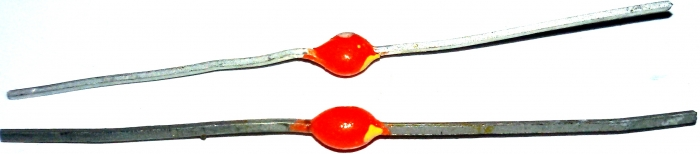
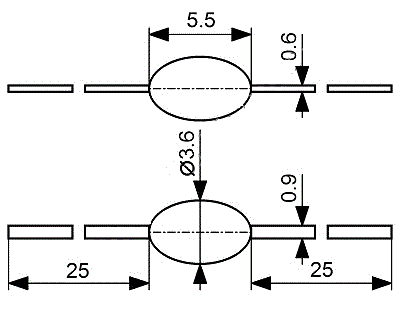
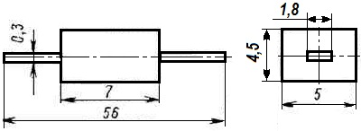
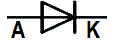

Диод КД209
Кремниевые, диффузионные выпрямительные диоды типа КД209 в пластмассовом корпусе предназначены для работы в приемной, усилительной и другой радиоэлектронной аппаратуре.

Рис. 1 - Внешний вид диода КД209


Рис. 2 - Габаритные размеры диодов КД209
Таблица 1
| Группа |  |
| А | |
| Б | |
| В | |
| Г |
Таблица 2
| Постоянное прямое напряжение при Iпр=Iпр макс, не более | |
| при 24,85°С | 1 В |
| при -60,15°С | 1,2 В |
| Постоянный обратный ток при Uобр=Uобр макс, не более | |
| от -60,15 до 24,85°С | 100 мкА |
| при 84,85°С | 300 мкА |
Таблица 3
| Постоянное и импульсное обратное напряжение | |
| КД209А | 400 В |
| КД206Б | 600 В |
| КД209В | 800 В |
| Постоянный или средний прямой ток | |
| КД209А | 700 мА |
| КД206Б | 500 мА |
| КД209В | |
| до 54,85°С | 500 мА |
| при 84,85°С | 300 мА |
| Импульсный прямой ток при τи≤20 мкс | 6 А |
| Частота без снижения режимов | 1 кГц |
| Температура окружающей среды | От -60,15 до 84,85°С |
Примечания:
1. При работе диодов на ёмкостную нагрузку эффективное значение прямого тока не должно превышать 1,57Iпр ср макс.
2. Допускается работа диодов на частотах выше 1 кГц в режимах, при которых средний обратный ток не превышает 500 мкА.
Аналоги диода КД209А
1N1126